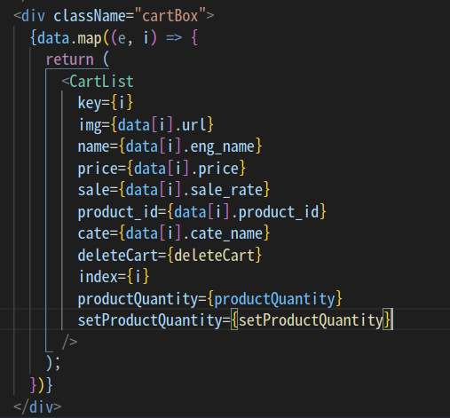
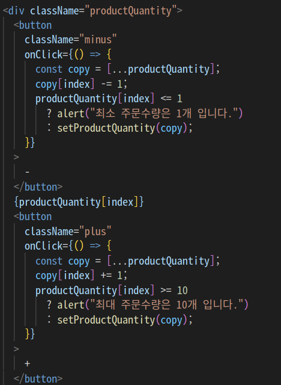

1차 Project 회고록
📑 1차 프로젝트 output 및 소개
배포 완료 : click ➡️WETOWN
직접 해보기 ⬆️
클론 사이트 : SMTOWN &STORE
팀 명 : WETOWN
프로젝트 목표 : Wecode에서 배운내용을 활용하여 클론 사이트의 기능개발 및 레이아웃 그리기
진행기간 : 2021년 12월 27일 ~ 2022년 1월 7일 ( total : 14days )
프로젝트 참여자 : 이준혁, 박태준, 최은비, 황희윤
Position : 나의 포지션은 backend 였으나 팀회의를 거쳐 나온 database tables의 수가 생각보다 적었고 클라이언트로 보내줘야 할 API 또한 몇가지 없었기에 front도 겸하게 되었다.
- 기술스택 -
BackEnd 기술 스택
- Page & API -
박태준
최은비
황희윤
🧑💻 Backend (WETOWN)
const productFilter = async (
category,
is_subcategory,
subcategory,
sortMethod
) => {
return await prisma.$queryRaw`
SELECT
products.id,
eng_name,
price,
is_new,
sale_rate,
categories.name as cate_name,
subcategories.name as subcate_name,
url
FROM
products
JOIN
categories on category_id = categories.id
JOIN
images on products.id = images.product_id
JOIN
subcategories on subcategories.id = subcategory_id
WHERE
if(${is_subcategory},
categories.name = ${category} and subcategories.name = ${subcategory} and images.is_main = true,
categories.name = ${category} and images.is_main = true)
ORDER BY
case WHEN ${sortMethod} = 1 then created_at end ASC,
case WHEN ${sortMethod} = 2 then eng_name end ASC,
case WHEN ${sortMethod} = 3 then price end ASC,
case WHEN ${sortMethod} = 4 then price end DESC;
`;
};
원래는 API 주소를 category, subcategory 각각 사용하였는데 멘토님이 하나로 합쳐보라고 하였다.
그래서 subcategory값과 sortMethod값을 Query String으로 받았고 category값은 Path Variable로 받았다.
subcategory값의 유무에 따라 클라이언트에 주는 데이터를 달리하였고
order by에 case문을 주어 sortMethod값에 따라 정렬기준을 주었다.
처음의 방대한 양의 코드가 리팩토링 후 확 줄어든것을 보니 뿌듯하다.
🧑💻 Front (WETOWN)

 
DB의 carts 테이블에 저장되어있는 각 상품의 수량을 fetch함수로 불러올때
map을 돌려 productQuantity state에 담아 보관한다.
CartList 컴포넌트에서 사용된 button을 클릭시에 상품의 수량이 개별적으로 바뀌어야하는데
이때 productQuantity를 Spread Opertor를 통해 레퍼런스를 끊어 copy하여 해당 인덱스번째의 값만 바꾸어 set시킨다
🧑 협업 Git & Github
Communication 스택
🔹 코드리뷰를 받으며 내가 몰랐던것들, 깜빡했던것들 등 다양한 리뷰를 받아 업그레이드 되는 code를 맛볼수있다.
🔹 나와는 다른생각을 갖고 짠 새로운 code를 경험할 수 있다.
🔹 시간약속을 잘지키는것이 정말 중요하고 그 사람에 대한 신뢰도를 결정짓는다는 것을 느끼게되었다.
🔹 내 코드를 내가 리뷰하며 어느부분은 이해가 잘되고 어느부분은 어렵다는것을 알게됐고 코드를 간결하게 짜는것 보다 남들이 봤을때 이해하기 쉽게 쓰게 되었다.
🧑 회고
팀원 모두 프로젝트 경험이 전무하기 때문에 초반에 고생을 좀 하였다.
하지만 팀원분들이 모두 온화한 성격을 가지고 계신탓인지 분위기 만큼은 좋았고
다른팀들에 비해 의견충돌도 거의 없었다.
( 첫 프로젝트라 욕심부리지말고 기본에만 충실하자라는 생각으로 회의를 해서 그런가? )
모두들 잘해주었고 문제없이 진행되고 있었다.
하지만 그 순간이 태풍이 눈이었을까…
back은 코드가 깔끔하게 잘짜져서 곧 바로 커밋, 푸쉬를 하였지만
front는 코드가 더럽고 알아보기 힘들것 같아 내선에서 약간의 리팩토링을 거치고 커밋을 한다는게
하루..이틀..일주일이 지나도록 한번도 커밋을 하지 않고 있었던 것이다.
그제서야 내가한것을 푸시하기 위해 develop 브랜치에서 pull을 받았는데 충돌이 났고
pull, branch 등 Git에 대해 제대로된 숙지를 못하고 있던 나는 이것저것 시도해보다
일주일치의 파일이 통째로 사라지게 되었다..
눈앞이 캄캄해졌고 현실을 받아들이기 어려웠지만
팀원들에게 너무 미안한 마음에 초인적인 스피드로 다시 그리기 시작했다.
백업파일의 필요성을 뼈저리게 느꼈고 결국 그 날 밤을 새워 똑같이 다시 구현해냈다.
근데 오히려 실수를 하고 나니 좋은점들이 더 많이 파생되었다.
그 날 이후 기능단위로 커밋을 무조건하였고 노트북을 닫기전에는 backup파일을 만들어 두는것이 습관화 되었다.
또한 손이 빨리지게 되었고 Git에 대해 제대로 숙지가 되었다. ( 모를땐 신중하게 대처하는건 덤 )
이번 프로젝트를 통해 정말 많은것을 얻게되었고
함께한 태준님, 은비님, 희윤님 모두 잘해주셔서 고맙습니다.
감사합니다